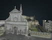

An Update from Florence
December 2, 2022
What Professor Bent has been up to lately!
Upcoming scans, never-before-seen views, and dealing with Italian weather- an inside look into what Professor Bent has been doing.
December 2, 2022
What Professor Bent has been up to lately!
Upcoming scans, never-before-seen views, and dealing with Italian weather- an inside look into what Professor Bent has been doing.
The Bargello |
Palace of the Podestà, jail, and chapel for the condemned | |
The Bigallo |
 |
Fourteenth-century charitable institution |
The Innocenti |
15th century children's hospital | |
Orsanmichele |
 |
Fourteenth-century granary and church of the guilds |
Palazzo Davanzati |
 |
14th century merchant's residence |
San Lorenzo |
 |
Fifteenth-century parish church, brainchild of Brunelleschi and burial ground of the early Medici |
San Miniato |
Eleventh-century Olivetan church and monastery | |
Santa Croce |
 |
Fourteenth- and fifteenth-century Franciscan church and friary |
Santa Maria del Fiore (The Duomo) |
 |
Early Christian foundations; 14th century nave; 15th century cupola |
Santa Maria Novella |
 | Dominican convent and cloisters of Santa Maria Novella (1275) |
Florence As It Was' first 3D model is that of the Loggia of the Bigallo, one of Florence's most visible structures on the Piazza San Giovanni and a physical reminder of the city's rich Medieval past. The structure housed charitable organizations that ministered to orphaned children, poor unwed girls, the homeless, and pilgrims on the way to and from Rome. These confraternities sponsored the creation of some of the city's most unique art in order to decorate their residence and proclaim their importance in the fabric of Florentine society. And like much of Florence's past, the Bigallo has undergone significant changes—changes that we hope to unravel, peeling back the layers of time to find the Medieval city that gave birth to the Italian Renaissance. The Bigallo, then, is a perfect starting point for our work, and a snapshot that captures the essence of Florence As It Was.
Sam Joseph created the model using thousands images (which he took with a point-and-shoot camera and a tripod over the summer of 2017) and pieced it together using a process called photogrammetry. For future models, we hope to gain access to a high-resolution drone for detailed exteriors and a laser scanner for interiors.
Italian, 1628-1696
Ferdinando del Migliore was born in 1628 and spent his adult life researching and writing about the history of Florence. A gifted archivist, del Migliore scoured the registers and contracts of individuals and institutions in an effort to present to his readers accurate accounts of the city’s past.
Paatz - German, 1952-1955 - A German husband-and-wife team of art historians with an incredible attention to detail.
Context-Dependent Sources